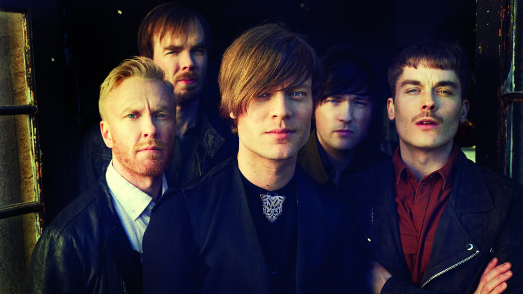
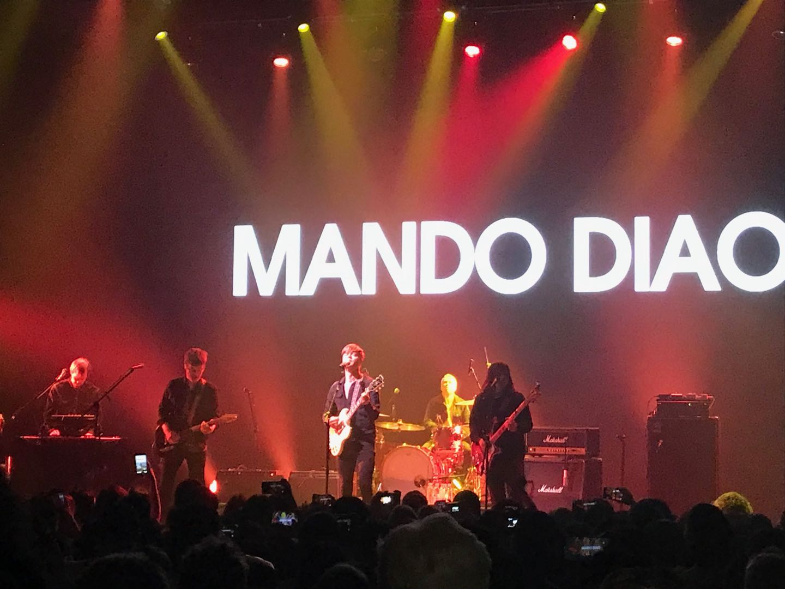

All About Mando Diao
[From Wikipedia]Mando Diao is an alternative rock band from Borlänge, Sweden. The band got their breakthrough with the release of the album Hurricane Bar. Their main fan base is in Sweden, Germany, Austria, Switzerland and Japan. Band members are Björn Dixgård (vocals, guitar), Carl-Johan Fogelklou (bass), Jens Siverstedt (guitar), Daniel Haglund (keyboard) and Patrik Heinkipieti (drums).
Me and Mando Diao
The first Mando Diao song I heard is "To China with Love". It has a eye-catching name. The rhythm is very catchy and funky. It's lyric is jumpy and funny. I fell in love with it at once.
The first Mando Diao live I went to is in Beijing in the winter of 2018. Mando Diao's fanbase largely located in China and Japan so they love to go east on their journey. The livehouse is all packed, I was standing at the far corner of the stage while still get shocked by the stage porformance and contagion. I still remember when they are porforming the song "Dance With Somebody", the full house start to jumping with the beat. It was unforgetable.
My favorite song from Mando Diao is called "Mr.Moon", I'm gonna attach the music vedio below!
This is the Music Video of Mando Diao - "Mr.Moon"